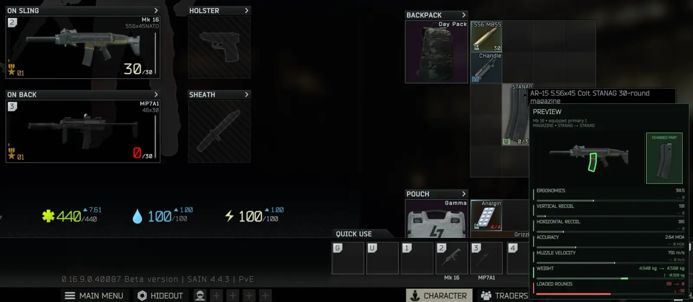
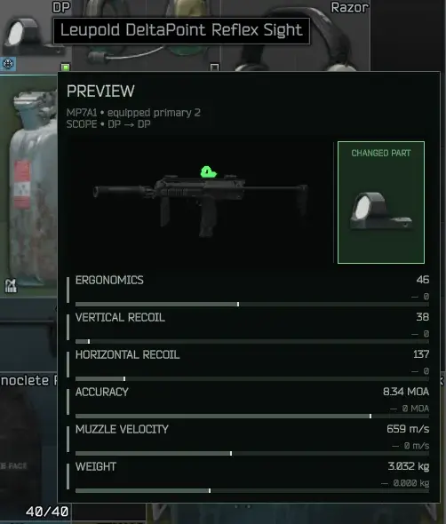
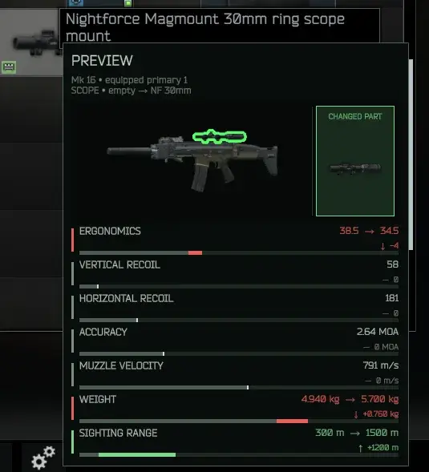

AC's Stat Delta Preview
- Downloads
- 1,559
- Favourites
- 22
- Mod lists
- 16
Stat Delta Preview — know before you install
Hover an attachment. See exactly what it gains, what it costs, and how it changes your weapon.
No spreadsheets. No buying parts just to test them. No mental recoil math.
- Real weapon comparison — uses the weapon open in the modding screen, your most recently inspected weapon, or a compatible equipped weapon.
- Understands replacements — if the attachment would replace an installed part, the preview shows the net difference instead of misleading standalone values.
- Before → after totals — ergonomics and recoil show the current and resulting weapon values.
- Clear color coding — improvements are green; losses are red. Lower recoil is correctly treated as an improvement.
- Useful everywhere — hover attachments in your stash, inventory, or trader offers.
- Always has a fallback — without a compatible weapon, it shows the attachment’s standalone contributions.
- Lightweight — calculations happen on hover, not every frame.
Previewed stats:
- Ergonomics
- Recoil
- Velocity
- Accuracy
- Download the release archive.
- Extract it into your SPT root folder — the one containing
EscapeFromTarkov.exe. - Launch SPT and hover any weapon attachment.
Expected install path:
BepInEx/plugins/AnanasCharles-StatDeltaPreview/StatDeltaPreview.dll
Client mod only — no server mod required.
Requirements:
- SPT 4.0.13
- No additional dependencies
Use F12 Configuration Manager or edit:
BepInEx/config/com.ananascharles.statdeltapreview.cfg
Enabled toggles the preview on or off.



- Covers weapon attachments represented by EFT’s
Moditem type. - Previews ergonomics, recoil, velocity, and accuracy — not zoom, magazine capacity, weight, durability, or every special attachment effect.
- Velocity and accuracy totals depend on ammunition, so those stats are shown as signed percentage changes rather than misleading before/after totals.
Source: Codeberg License: MIT
Version
1.1.0
Stat Delta Preview v1.1.0
A major preview upgrade: hover an attachment to see the assembled weapon, the exact part being changed, and the resulting weapon-level statistics before modifying the live inventory.
Highlights
- Renders the assembled weapon with a green outline around the candidate attachment.
- Shows a separate CHANGED PART card for quick identification.
- Identifies the exact weapon, source window, target slot, and old-to-new part exchange.
- Resolves weapon context from the modding screen, active weapon preview, inspect window, or compatible equipped weapon.
- Uses a cloned weapon as the source of truth; the live inventory is never modified.
- Adds explicit before → after values, signed changes, and semantic direction indicators:
↑improvement,↓regression,—unchanged. - Expands coverage to ergonomics, vertical/horizontal recoil, accuracy/MOA, muzzle velocity, weight, sighting range, magazine capacity and loaded rounds, magazine handling/check/feed values, durability burn, heat, cooling, loudness, and effective distance.
- Restores correct same-template and equipped-item replacement deltas.
- Adds a 100 ms configurable hover debounce, cooperative render cancellation, and a bounded 24-entry icon cache.
- Adds configuration for panel scale, cursor offsets, opacity, outline thickness, weapon-image visibility, and unchanged-stat visibility.
Version
1.0.0
Know what an attachment will do before you buy or install it.
Hover a weapon mod in your inventory, stash, or a trader offer to see a compact, color-coded stat preview beside the cursor.
Highlights
- Previews Ergonomics, Recoil, Velocity, and Accuracy.
- Compares against the weapon currently open in the modding screen.
- Falls back to the most recently inspected weapon, then a compatible equipped weapon.
- Detects installed-part replacements and shows the net gain or loss.
- Shows before → after totals for ergonomics and recoil.
- Shows green improvements and red regressions, with lower recoil correctly treated as better.
- Falls back to standalone attachment stats when no compatible weapon is available.
- Works across inventory, stash, and trader item views.
- Lightweight, event-driven implementation with no idle polling.
- Hover panel now closes correctly when the inventory is closed.